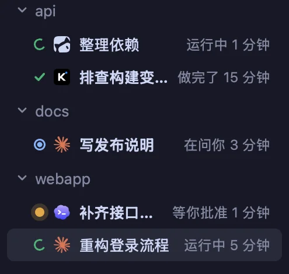

任务与进度Tasks and progress
会话按项目和任务归类，一个任务可以放多个 Agent。进度页每个任务一张卡：终点、当前重点和清单；可以自己写，也可以让会话起草，再一键告诉这个任务的会话。 Conversations sit under projects and tasks, and one task can hold several agents. The progress page gives each task a card with its end goal, current focus and checklist; write it yourself or have a conversation draft it, then tell the task's conversations in one click.
